CloudNet@에서 진행하고 있는 CI/CD Study 2주차에는 Helm과 Tekton을 다뤘습니다.
이번에는 Helm의 기본적인 부분을 다루도록 하겠습니다.
1. Helm의 역할과 실습 준비사항
Helm?
템플릿 기반 솔루션. 즉, 버전 관리 및 공유, 배포가 가능한 아티팩트를 생성하도록 돕습니다.
-
Helm chart(차트)
- 공유 가능한 Kubernetes(쿠버네티스, 이하 k8s) 패키지며, 차트 간 의존성 등 다양한 요소를 포함합니다.
- k8s를 다루면 Helm을 많이 사용하게 되는데, 그 이유 중 하나가 chart 개념입니다.
-
Rolling Update for ConfigMap
- 애플리케이션의 설정값은 일반적으로 k8s의 ConfigMap에 대응되는 속성입니다.
- ConfigMap: 수정되어도 애플리케이션의 롤링 없데이트 전, 즉 애플리케이션을 수동 재시작 하기 전까지는 값이 적용되지 않습니다.
- Helm은 ConfigMap이 변경되면, 자동으로 Rolling Update가 이루어지는 기능들을 제공합니다.
실습 준비
-
kind
kind 설치의 경우 다음 포스트를 참고할 수 있습니다.
리눅스에 KIND 설치하기 w/golang
Docs: https://kind.sigs.k8s.io/
kind를 통해, 로컬 환경에 k8s를 배포해보겠습니다.
# 2w/shells/kind/up-kind.sh
kind create cluster --name myk8s --image kindest/node:v1.32.8 --config - <<EOF
kind: Cluster
apiVersion: kind.x-k8s.io/v1alpha4
nodes:
- role: control-plane
extraPortMappings:
- containerPort: 30000
hostPort: 30000
- containerPort: 30001
hostPort: 30001
EOF

2. Helm 설치
Snap패키지(snapcraft)로도 설치가 가능하니,
이 방법으로 설치해보겠습니다.
sudo snap install helm --classic
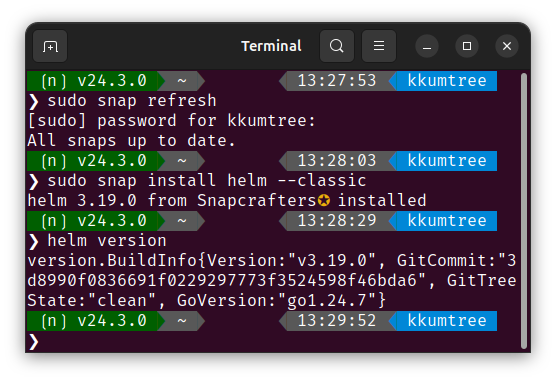
2. Helm Project 101
아래의 구조를 갖습니다.
- Chart.yaml: metadata
- templates: 설치와 관련된 모든 템플릿 파일
- deployment.yaml
- service.yaml
- (..)
- values.yaml: chart default value
아래와 같이 4개의 YAML파일을 생성해보겠습니다.
해당 구성들은 아래 GitHub에 탑재되어 있습니다.
https://github.com/kkumtree/ci-cd-cloudnet-study
Helm의 구성파일들은2w/pacman폴더에 있습니다.
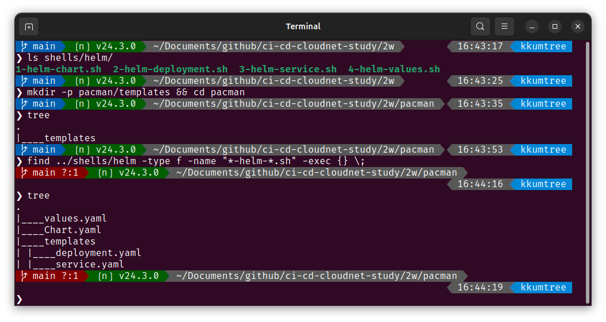
(1) Chart.yaml
Helm chart의 메타데이터 정의 https://helm.sh/docs/topics/charts/#the-chartyaml-file
# 2w/shells/helm/1-helm-chart.yaml
cat << EOF > Chart.yaml
apiVersion: v2
name: pacman
description: A Helm chart for Pacman
type: application
version: 0.1.0
appVersion: "1.0.0"
EOF
- apiVersion: chart API 버전
- Helm 2는
V1, Helm 3는V2값을 갖습니다.
- Helm 2는
- name: 차트에 대한 이름
- version: 차트 에 대한 버전 (SemVer, 시맨틱 버전 규칙)
- 차트 정의가 바뀌면 업데이트
- description: 차트에 대한 설명
- type: 차트의 타입 (optional)
application(기본값) 혹은library택 1.library: 재사용 가능한 차트. 배포 되지 않는 일종의 템플릿.
- appVersion: 어플리케이션 버전
version과 독립적.- 권장표기: 쌍따옴표(
") 사용."<APPLICATION_VERSION>"
(2) templates/deployments.yaml
일반적인 deployment에 템플릿 언어 및 함수를 사용하여 배포 정의
템플릿에 쓰이는 언어는 Go
# 2w/shells/helm/2-helm-deployment.yaml
cat << EOF > templates/deployment.yaml
apiVersion: apps/v1
kind: Deployment
metadata:
name: {{ .Chart.Name}}
labels:
app.kubernetes.io/name: {{ .Chart.Name}}
{{- if .Chart.AppVersion }}
app.kubernetes.io/version: {{ .Chart.AppVersion | quote }}
{{- end }}
spec:
replicas: {{ .Values.replicaCount }}
selector:
matchLabels:
app.kubernetes.io/name: {{ .Chart.Name}}
template:
metadata:
labels:
app.kubernetes.io/name: {{ .Chart.Name}}
spec:
containers:
- image: "{{ .Values.image.repository }}:{{ .Values.image.tag | default .Chart.AppVersion}}"
imagePullPolicy: {{ .Values.image.pullPolicy }}
securityContext:
{{- toYaml .Values.securityContext | nindent 14 }}
name: {{ .Chart.Name}}
ports:
- containerPort: {{ .Values.image.containerPort }}
name: http
protocol: TCP
EOF
- metadata: Chart.yaml 파일에 설정된 값으로 설정
{{ .Chart.AppVersion}}: 필수요소가 아니므로, 조건문으로 구성{{ .Chart.Name}}: name 및 labels.app.kubernetes.io/name
- spec: Chart.yaml 파일 및 후술할 values.yaml에 설정된 값으로 설정
"{{ .Values.image.repository }}:{{ .Values.image.tag | default .Chart.AppVersion}}"- image 및 image tag 지정 방법
- values.yaml에 tag 지정이 없을시, Chart.yaml에 있는 AppVersion을 기본값으로 설정
toYaml: Helm Docs/{{- toYaml .Values.securityContext | nindent 14 }}- 앞의 공백 제거 후, 해당 부분을 YAML 객체화. 이후 14칸의 들여쓰기
{{ .Values.replicaCount}}{{ .Values.image.pullPolicy}}
(3) templates/service.yaml
서비스 이름 및 컨테이너 포트 지정
# 2w/shells/helm/3-helm-service.yaml
cat << EOF > templates/service.yaml
apiVersion: v1
kind: Service
metadata:
labels:
app.kubernetes.io/name: {{ .Chart.Name }}
name: {{ .Chart.Name }}
spec:
ports:
- name: http
port: {{ .Values.image.containerPort }}
targetPort: {{ .Values.image.containerPort }}
selector:
app.kubernetes.io/name: {{ .Chart.Name }}
EOF
(4) values.yaml
default values, 기본 설정 정의
# 2w/shells/helm/4-values.yaml
cat << EOF > values.yaml
image:
repository: quay.io/gitops-cookbook/pacman-kikd
tag: "1.0.0"
pullPolicy: Always
containerPort: 8080
replicaCount: 1
securityContext: {}
EOF
- 템플릿 정의 부분 확인
- image.*
- replicaCount
- securityContext:
{}(속성 비움)
3. Local rendering to YAML
- 로컬에서 렌더링을 해봅니다.
helm template .
- Chart.yaml과 values.yaml을 제외한, YAML 파일들의 렌더링 확인
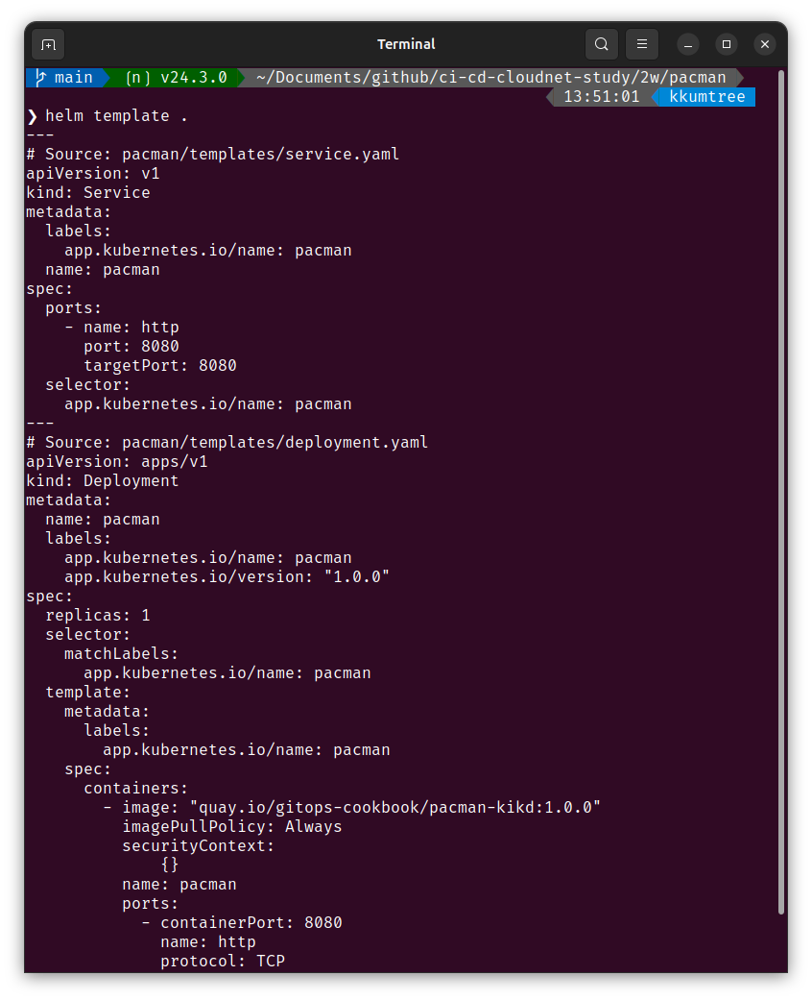
기본값 재정의 후, 렌더링 (–set)
기본값을 변경(override)하여 정상 적용되는지 확인해봅니다.
values.yaml의replicaCount를 변경해보겠습니다.
# # 기존(deployment.yaml)
# # spec.replicas: 1
# helm template . | grep "replicas:" -B9
helm template --set replicaCount=3 . | grep "replicas:" -B9
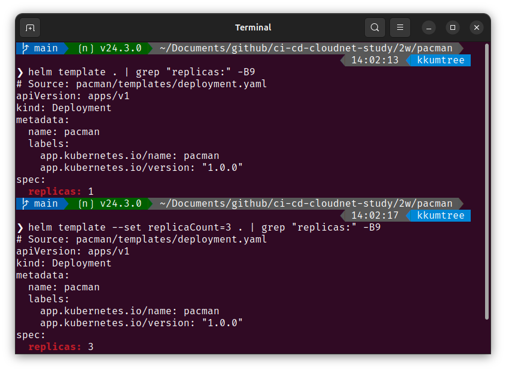
4. kind(k8s)에 chart 배포 및 helm 확인
실제로 k8s에 배포 후, 확인을 합니다.
helm install pacman .
helm list
kubectl get deploy,pod,service,ep
helm history pacman
kubectl get pod -o yaml | grep securityContext -A1
# secret도 보겠습니다.
kubectl get secret
- Secret 생성 이유?
sh.helm.release.v1.pacman.v1Helm은 배포 릴리스에 대한 metadata를 저장하기 위해, 자동으로 Secret 리소스를 생성합니다.
Helm이 차트의 상태를 복구하거나 rollback 할 때 이 데이터를 이용
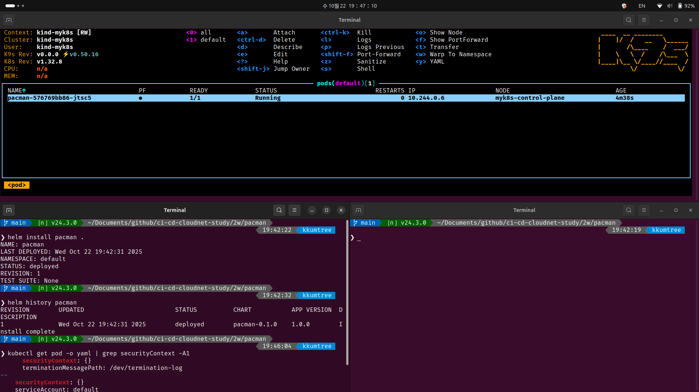
- 이번엔 replicaCount 값을 재설정하여, 배포를 합니다.
--reuse-values: 업그레이드 진행시, 최신 릴리스의 값에 CLI Override(`–set 및 -f)값과 합쳐 적용.
helm upgrade pacman --reuse-values --set replicaCount=2 .
kubectl get pod
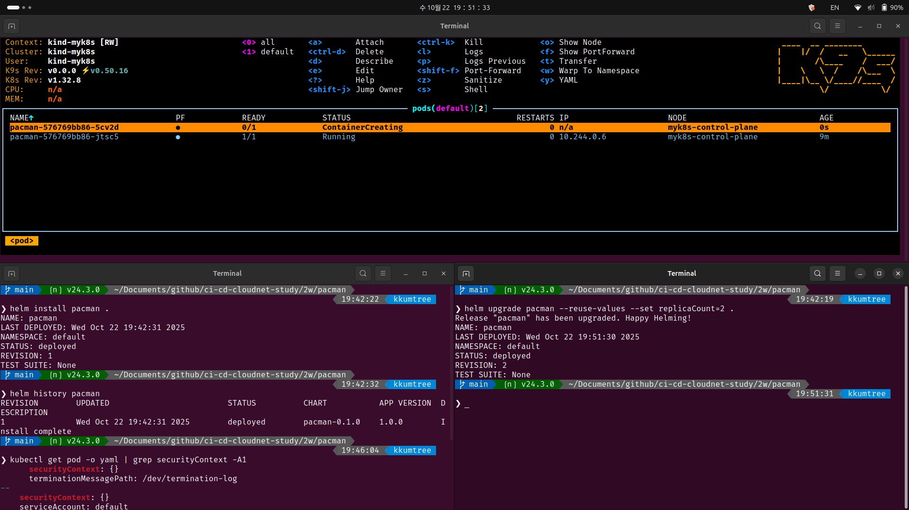
- 히스토리와 시크릿은 upgrade 할 때마다 누적되는 것을 확인할 수 있습니다.
kubectl get secret
helm history pacman
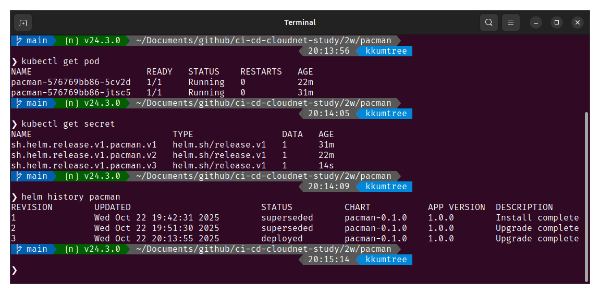
- 이외에도 chart의 배포 정보, 즉 metadata를 살펴보겠습니다.
helm get all pacman
helm get values pacman
helm get manifest pacman
helm get notes pacman
- all: 아래 내용에 대한 전체 사항
- values:
USER-SUPPLIED VALUES(사용자 지정 값) - manifest: chart에 의해 생성된 k8s 리소스의 표현 (YAML 형식)
- notes: 해당 릴리스에 대한 노트(메모)
- values:
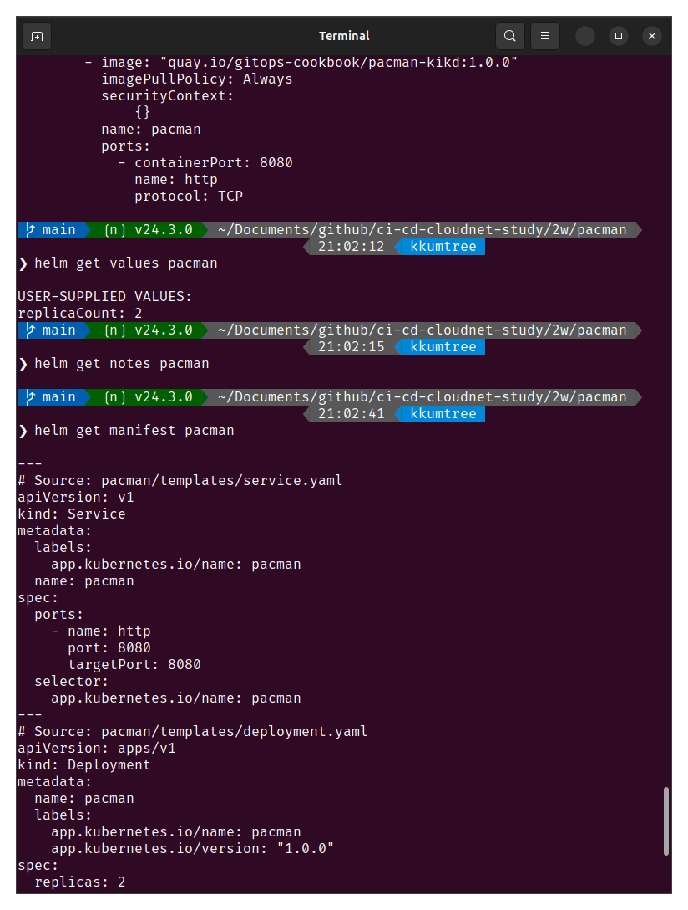
- chart의
secret의 경우, 아래 사진과 같은 base64로 인코딩된 값을 가집니다.
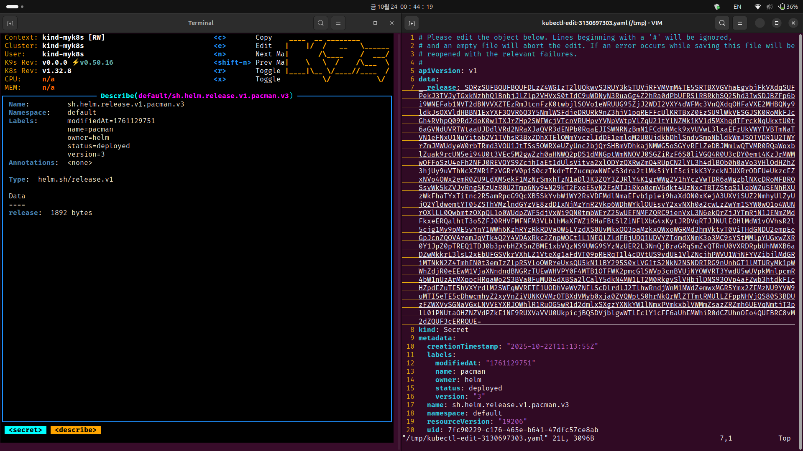
- 이 값을
2번디코딩했을때는 아래와 같이 출력됩니다.
kubectl get secrets sh.helm.release.v1.pacman.v1 -o jsonpath='{.data.release}' | base64 -d | base64 -d | gzip -d | jq
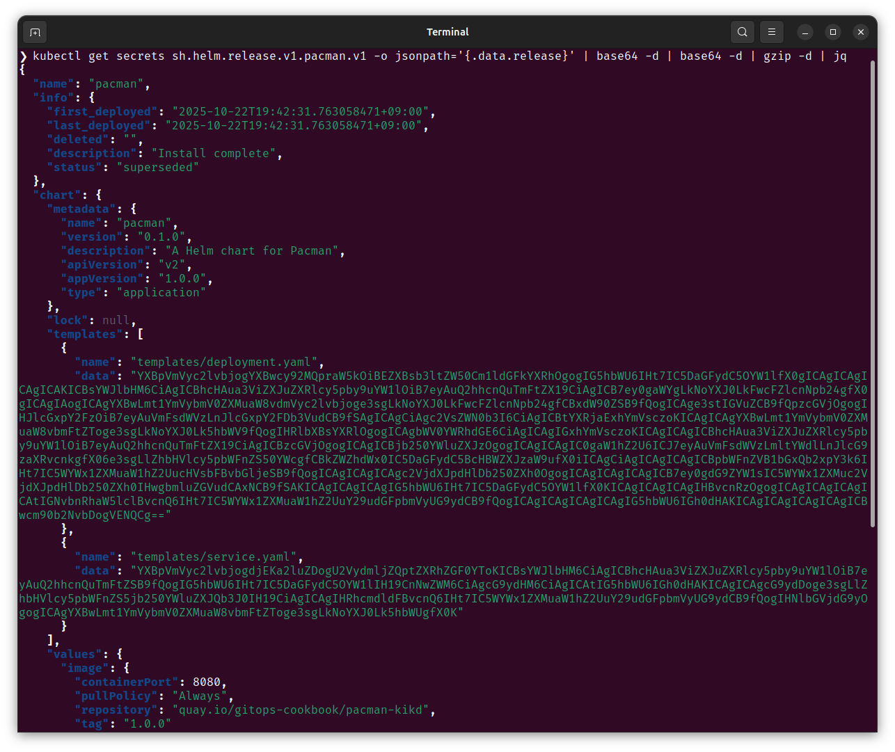
secret이 갖고있던 메타데이터 키값들을 확인해봅니다.
kubectl get secret sh.helm.release.v1.pacman.v3 -o jsonpath='{.data.release}' | base64 -d | base64 -d | gzip -d | jq -r 'paths(scalars) | join(".")'
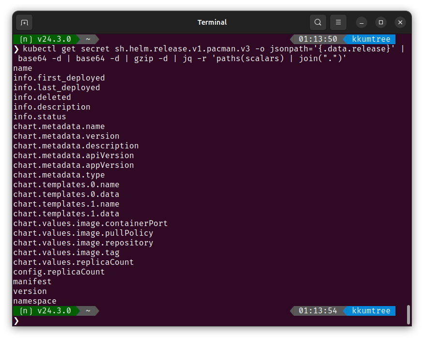
5. chart 삭제 후 확인
helm uninstall pacman
kubectl get secret
- chart를 삭제하면, 변화를 기록하던 시크릿도 다 함께 사라진 것을 확인할 수 있습니다.
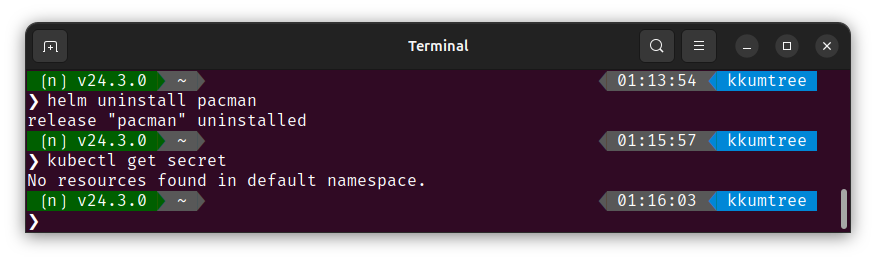
8. Chart API v1 -> v2 변화점 (Helm v2 to v3)
A
dependenciesfield defining chart dependencies, which were located in a separaterequirements.yamlfile for v1 charts. The type field, discriminating application and library charts.
- 기존
requirements.yaml에 분리되어 있던dependencies필드는,Chart.yaml에서 정의됩니다. type필드 도입을 통해서 일반적인 애플리케이션용인지, 직접 배포되지 않아야하는 라이브러리인지 식별하는데 도움을 줍니다.
9. Template 관련
| No. | 기능 | 표현 | 설명 | 참고 |
|---|---|---|---|---|
| 1 | Whitespace Control | {{- |
앞의 공백문자(\n포함) 제거 |
{{ |
| 2 | newline indent | nindent |
앞에 개행 추가 | indent |
| 3 | 함수 호출(권장) | {{ toYaml … }} |
템플릿 함수 | sprig |
| 9 | template 호출 | {{ include "toYaml" … }} |
toYaml이라는 템플릿 호출 {{ define "toYaml" }} |
_helpers.tpl등에 정의 (과거) |
-
조건문 및 쌍따옴표 처리
{{- if <VAR> }} # 변수가 있을 때에만 KEY: {{ <VAR> | quote }} # 해당 변수에 쌍따옴표를 붙여서 구성 {{- end }} -
securityContext: 컨테이너 보안-
공백 처리 방법:
{}nil방지- 기본값으로 비어있는 객체로 설정한다는 의미
-
(예시)
securityContext: capabilities: drop: - ALL readOnlyRootFilesystem: true runAsNonRoot: true runAsUser: 1000 -
runAsUser/runAsGroup:- 컨테이너를 특정 유저 ID나 그룹 ID로 실행
-
runAsNonRoot:- root 권한 방지
-
readOnlyRootFilesystem:- 컨테이너의 루트 파일 시스템을 읽기 전용으로 설정
-
allowPrivilegeEscalation:- 부모 프로세스보다 더 많은 권한을 컨테이너 내부 프로세스가 획득하는 것을 설정
-
Reference

kkumtree
Source code on GitHub
© 2024 kkumtree and contributors All rights reserved.
Licensed under
CC BY-NC-ND 4.0